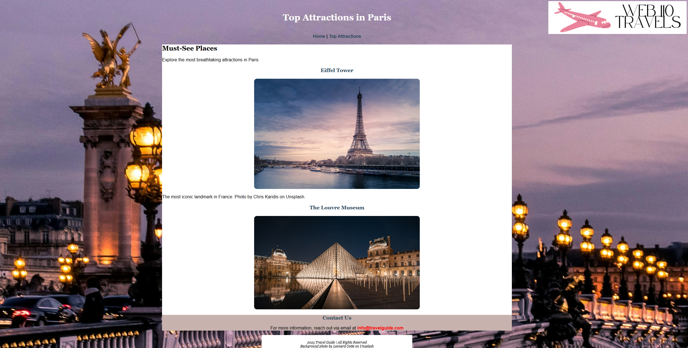

Below are examples of projects and coursework that demonstrate my skills in computer support, networking, and technology troubleshooting. Each project reflects my focus on quality, precision, and problem-solving.
Featured Projects
Website Design Project: Built a responsive web layout using HTML and CSS.

Source image: Ethan (JCCC assignment)
System Maintenence Project:Performed system backups, file recovery, and OS reinstallation exercises.
Team Collaboration Project:Worked with peers to troubleshoot a multi-user environment and present findings.